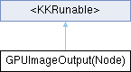

Inheritance diagram for GPUImageOutput(Node):

Instance Methods | |
| (BOOL) | - newFrameActiveAtTime:inputNode: |
| 外部输入节点 | |
 Instance Methods inherited from <KKRunable> Instance Methods inherited from <KKRunable> | |
| (void) | - newFrameDeactiveAtTime: |
Method Documentation
◆ newFrameActiveAtTime:inputNode:
| - (BOOL) newFrameActiveAtTime: | (NSValue *) | time | |
| inputNode: | (nullable NSObject<KKRunable>*) | inputNode | |
外部输入节点
计算数值的起始节点，用来更新节点链。 更新初始节点，并通知下游节点
- Parameters
-
time <#time description#>
Reimplemented from <KKRunable>.
The documentation for this category was generated from the following files:
- Shine/Shine/Vender/GPUImage/framework/Source/GPUImageExtension/GPUImageOutput+Extension.h
- Shine/Shine/Vender/GPUImage/framework/Source/GPUImageExtension/GPUImageOutput+Extension.m